2D localization uncertainty
Let  be the standard deviation of a fitted
Gaussian PSF in
be the standard deviation of a fitted
Gaussian PSF in  , 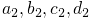 is the backprojected pixel size
in
, 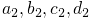 is the backprojected pixel size
in  ,
,  is estimate of the number of
photons detected for a given molecule, and 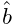 is the background
signal level in photons calculated as the standard deviation of the
residuals between the raw data and the fitted PSF model. The uncertainty
of least-squares or maximum-likelihood estimate of lateral position
of a molecule is estimated as
is estimate of the number of
photons detected for a given molecule, and 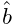 is the background
signal level in photons calculated as the standard deviation of the
residuals between the raw data and the fitted PSF model. The uncertainty
of least-squares or maximum-likelihood estimate of lateral position
of a molecule is estimated as
![\begin{array}[]{rcl}\left.(\Delta\hat{\theta}_{xy})^{2}\right|_{\mathrm{LSQ}}&%
=&\frac{g\hat{\theta}_{\sigma^{2}}+a^{2}/12}{\hat{\theta}_{N}}\left(\frac{16}{%
9}+4\tau\right)\,,\\
\left.(\Delta\hat{\theta}_{xy})^{2}\right|_{\mathrm{MLE}}&=&\frac{g\hat{\theta%
}_{\sigma^{2}}+a^{2}/12}{\hat{\theta}_{N}}\left(1+4\tau+\sqrt{\frac{2\tau}{1+4%
\tau}}\right)\,,\end{array}](mi/mi5.png) |
(1) |
respectively. Here
 |
The uncertainty for least-squares estimate is also known as the Thompson-Larson-Webb
formula [3], which has been altered with the correction
factor of  as suggested by [1].
The uncertainty for maximum-likelihood was derived in [Rieger2014].
Finally, the compensation for readout noise
as suggested by [1].
The uncertainty for maximum-likelihood was derived in [Rieger2014].
Finally, the compensation for readout noise  and EM gain
and EM gain  has been added by following [2], who suggested that when
using EMCCD cameras, the correction factors should be set to 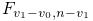,
has been added by following [2], who suggested that when
using EMCCD cameras, the correction factors should be set to 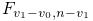,
 and when using CCD or sCMOS cameras the readout noise in electron
counts should be set to
and when using CCD or sCMOS cameras the readout noise in electron
counts should be set to  .
.
3D localization uncertainty
The lateral uncertainty is calculated same as in the 1, but 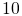 differs because of the axial defocus (PSF spreads and is never focused in both planes simultaneously, thus the uncertainty is worse). This has been derived in [Rieger2014] as
 |
Since the axial position is estimated from  and 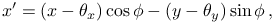, the axial uncertainty is calculated
from uncertainty of these parameters
and 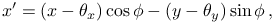, the axial uncertainty is calculated
from uncertainty of these parameters
![\begin{array}[]{rcl}\left.(\Delta\hat{\theta}_{\sigma_{j}})^{2}\right|_{%
\mathrm{LSQ}}&=&\frac{g\hat{\theta}_{\sigma_{j}^{2}}+a^{2}/12}{\hat{\theta}_{N%
}}\left(1+8\tau\right)\,,\\
\left.(\Delta\hat{\theta}_{\sigma_{j}})^{2}\right|_{\mathrm{MLE}}&=&\frac{g%
\hat{\theta}_{\sigma_{j}^{2}}+a^{2}/12}{\hat{\theta}_{N}}\left(1+8\tau+\sqrt{%
\frac{9\tau}{1+4\tau}}\right)\,,\end{array}](mi/mi4.png) |
(2) |
where  can be substituted to calculate uncertainty of
can be substituted to calculate uncertainty of  and . Then from error propagation follows
and . Then from error propagation follows
 |
(3) | ||
![\displaystyle(\Delta F)^{2}=(1-F^{2})\left[\left(\frac{\Delta\hat{\theta}_{%
\sigma_{1}}}{\hat{\theta}_{\sigma_{1}}}\right)^{2}+\left(\frac{\Delta\hat{%
\theta}_{\sigma_{2}}}{\hat{\theta}_{\sigma_{2}}}\right)^{2}\right]\,,](mi/mi1.png) |
(4) | ||
 |
(5) |
where  is the distance between focal planes given by the astigmatic
lens and the geometry of the setup and
is the distance between focal planes given by the astigmatic
lens and the geometry of the setup and  is a measure of focal
depth. These quantities are already known during the 3D fitting process
as 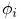 and 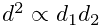, where
is a measure of focal
depth. These quantities are already known during the 3D fitting process
as 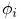 and 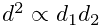, where
 are parameters of the defocus curves.
are parameters of the defocus curves.
References
- [1] (2010) Optimized localization analysis for single-molecule tracking and super-resolution microscopy. Nature Methods 7 (5), pp. 377–381. External Links: Document Cited by: 2D localization uncertainty.
- [2] (2010) Localization capability and limitation of electron-multiplying charge-coupled, scientific complementary metal-oxide semiconductor, and charge-coupled devices for superresolution imaging. Journal of Biomedical Optics 15 (6), pp. 066005. External Links: Document Cited by: 2D localization uncertainty.
- [3] (2002) Precise nanometer localization analysis for individual fluorescent probes. Biophysical Journal 82 (5), pp. 2775–83. External Links: Document Cited by: 2D localization uncertainty.
![[LOGO]]()